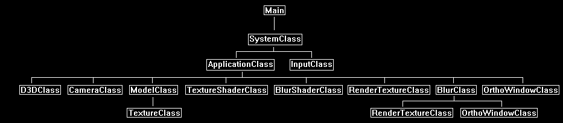

The blur effect is used for blurring the full screen scene or blurring individual objects in that scene.
But more importantly the blur effect is also the base effect for numerous other effects.
Some of those effects are bloom, depth of field blurs, full screen glow, glow mapping, halo/edge glows, softening shadow edges, blurred light trails, under water effects, and many more.
However, this tutorial will just cover how to perform a basic full screen blur.
In DirectX 11 the real time blur effect is performed by first rendering the scene to a texture, performing the blur on that texture, and then rendering that texture back to the screen.
Whenever we perform 2D image operations on a scene that has been rendered to texture it is called post processing.
To perform any post processing, it is generally quite expensive and requires heavy optimization in the shaders.
Now this tutorial is not optimized, I broke it out into separate areas so that you could clearly understand how the blur effect works.
Once you understand how it works your task will be to optimize it for your own use.
There will be many ways to do so (such as using less render to textures, making the shader multi-pass, precalculating normalization of weights) but I will leave that for you to think about and implement.
The Blur Algorithm
1. Render the scene to texture.
2. Down sample the texture to half its size or less.
3. Perform a horizontal blur on the down sampled texture.
4. Perform a vertical blur.
5. Up sample the texture back to the original screen size.
6. Render that texture to the screen.
We will now discuss each of these points.
In the first step we render our entire scene to a texture.
This is fairly straight forward and has already been covered in Tutorial 25: Render to Texture, so you may want to review that if you have not already done so.
The second step is to down sample the render to texture of the scene to a smaller size.
To do this we first create a 2D square model composed of two triangles (in this tutorial I call the class that contains that 2D model OrthoWindowClass).
We make the size of that 2D square model the smaller size we require (for example 256x256, or half the screen width and half the screen height).
Next, we render the full screen texture to the smaller 2D square model and the filtering in the shader sampler will handle down sampling it for us.
You have already seen how this works in Tutorial 12: 2D Rendering.
Now you may wonder why we are down sampling and what that actually has to do with the blurring algorithm.
The first reason is that it is computationally far less expensive to perform a blur on a smaller texture than a large one (by magnitudes).
And secondly is that shrinking the texture down and then expanding it back up performs a blur on its own that makes the end result look twice as good.
In fact, back in the day that was one of the only few options you had to perform a real time blur.
You would just shrink the texture down and then blow it back up.
This was heavily pixelated and didn't look great but there weren't many other options before programmable graphics hardware showed up.
Once we have the down sampled texture, we can now perform the blur.
The method we are going to use for blurring is to take a weighted average all the neighbor pixels around each pixel to determine the value the current pixel should be.
Already you can tell this is going to be fairly expensive to perform, but we have a way of reducing the computational complexity by doing it in two linear passes instead.
We first do one horizontal pass and one then vertical instead of doing a single circular neighborhood pass.
To understand the difference in the speed between the two different pass methods take for example just a 100x100 pixel image.
Two linear passes on a 100x100 image requires reading 100 + 100 = 200 pixels.
Doing a single circular pass requires reading 100 * 100 = 10,000 pixels.
Now expand that same example to a full screen high-definition image and you see why using two linear passes is the better way to go.
The first linear pass is going to be a horizontal blur. For example, we will take a single pixel such as:

Then we will perform a weighted blur of its 3 closest horizontal neighbors to produce something similar to the following for each pixel:

We do this for the entire down sampled texture.
The resulting horizontally blurred image is then rendered to a second render to texture.
This second render to texture will be used as the input texture for the next vertical blur pass.
Now for the blur weights that were used for each pixel during the horizontal blur you can increase or decrease each one of them for each neighbor pixel.
For example, you could set the middle pixel to be 1.0, then first left and right neighbor to be 0.9, then the further two neighbors to be 0.8, and so forth.
Or you could be more aggressive with the blur and set the weights to be 1.0, 0.75, 0.5, and so on.
The weights are up to you and it can have drastically different results.
In fact, you could use a sine wave or saw tooth pattern for the weights instead, it is completely up to you and will produce different interesting blurs.
The other variable here is how many neighbors you blur.
In the example here we only blurred the first 3 neighbors.
However, we could have extended it to blur the first 20 neighbors if we wanted to.
Once again, the change to this number will have a considerable effect on the final blur result.
In the shader code for this tutorial, we use four neighbors.
Now that we have a horizontally blurred image on a separate render to texture object we can then proceed with the vertical blur.
It works exactly the same way as the horizontal blur except that it goes vertically and uses the horizontal blur render to texture as input instead of the original down sampled scene texture.
The vertical blur is also rendered to another new render to texture object.
Separating each render to texture also allows you to display the results of each blur pass on the screen for debugging purpose.
Now using the same example as before and applying the vertical blur would then produce the following blur for each pixel:

Once this process is complete, we have the final blurred low-resolution image, but we are going to now need to sample it back to the original screen size.
This is performed the exact same way that the down sample was originally performed.
We create a 2D square model composed of two triangles and make the size of the 2D square model the same size as the full resolution screen.
We then render the small blurred texture onto the full screen square model and the filtering in the shader sampler will handle the up sampling.
The process is now complete and the up sampled texture can be rendered to the screen in 2D.
Now let's take the example of our spinning cube and see how this should appear visually at each step:
First render the spinning cube to a texture:

Next down sample that texture to half the size of the original:

Perform a horizontal blur on the texture:

The perform a vertical blur on the texture and up sample it back to the normal size:

Other Considerations
Now as you may have guessed there will be some aliasing issues that arise due to the up-sampling process.
These aliasing issues may not be apparent if your original down sample was half the screen size.
However, if your original down sample was a quarter of the screen size (or less for an aggressive blur, then you will see some artifacts when it is sampled back up.
These artifacts become even more apparent with movement and specifically movement in the distance, you will see flickering/shimmering occurring.
One of the ways to deal with this problem is to write your own up sampling shader which just like the blur technique samples a large number of pixels around it to determine what value the pixel should actually have instead of just a quick linear interpolation.
As well there are other sampling filters available which can reduce the amount of aliasing that occurs.
Now if you are blurring per object instead of the entire screen then you will need to billboard the 2D texture based on the location of each object.
You can refer to the billboarding tutorial I wrote to see how to do this.
And one last thing to mention before getting into the frame work and code is that if you want an even more aggressive blur you can run the horizontal and vertical blur twice on the down sampled image instead of just once.
You can even split the multiple blurs over multiple frames.
Framework
There are three new classes for this tutorial.
The first class is the BlurShaderClass which is a shader that can blur either vertically or horizontally depending on how you call it.
The second class is the BlurClass which handles calling the blur shader to do the horizontal and vertical blurring, and it also performs the down and up scaling all in a single easy to use class.
The third new class is OrthoWindowClass which is just a 2D square model made out of two triangles used for 2D rendering only.
It allows you to size it however you want and can then be used to render textures onto it.
It can be used for down sampling, up sampling, and just plain rendering 2D to the screen.

We will start the code section with the HLSL blur shader.
Blur.vs
The blur vertex shader is the same as the texture shader vertex shader.
////////////////////////////////////////////////////////////////////////////////
// Filename: blur.vs
////////////////////////////////////////////////////////////////////////////////
/////////////
// GLOBALS //
/////////////
cbuffer MatrixBuffer
{
matrix worldMatrix;
matrix viewMatrix;
matrix projectionMatrix;
};
//////////////
// TYPEDEFS //
//////////////
struct VertexInputType
{
float4 position : POSITION;
float2 tex : TEXCOORD0;
};
struct PixelInputType
{
float4 position : SV_POSITION;
float2 tex : TEXCOORD0;
};
////////////////////////////////////////////////////////////////////////////////
// Vertex Shader
////////////////////////////////////////////////////////////////////////////////
PixelInputType BlurVertexShader(VertexInputType input)
{
PixelInputType output;
// Change the position vector to be 4 units for proper matrix calculations.
input.position.w = 1.0f;
// Calculate the position of the vertex against the world, view, and projection matrices.
output.position = mul(input.position, worldMatrix);
output.position = mul(output.position, viewMatrix);
output.position = mul(output.position, projectionMatrix);
// Store the texture coordinates for the pixel shader.
aoutput.tex = input.tex;
return output;
}
Blur.ps
////////////////////////////////////////////////////////////////////////////////
// Filename: blur.ps
////////////////////////////////////////////////////////////////////////////////
//////////////////////
// CONSTANT BUFFERS //
//////////////////////
The ScreenBuffer constant buffers contains the screen width and screen height so we can determine the actual texel size (the actual floating-point size of each pixel on the user's monitor or output texture) so we can blur appropriately.
And we also need the blurType to know if we should blur horizontally or blur vertically for this pass.
cbuffer ScreenBuffer
{
float screenWidth;
float screenHeight;
float blurType;
float padding;
};
/////////////
// GLOBALS //
/////////////
The shaderTexture is the input texture that we are going to blur.
Texture2D shaderTexture : register(t0);
SamplerState SampleType : register(s0);
//////////////
// TYPEDEFS //
//////////////
struct PixelInputType
{
float4 position : SV_POSITION;
float2 tex : TEXCOORD0;
};
////////////////////////////////////////////////////////////////////////////////
// Pixel Shader
////////////////////////////////////////////////////////////////////////////////
float4 BlurPixelShader(PixelInputType input) : SV_TARGET
{
float texelSize;
float2 texCoord1, texCoord2, texCoord3, texCoord4, texCoord5;
float2 texCoord6, texCoord7, texCoord8, texCoord9;
float weight0, weight1, weight2, weight3, weight4;
float normalization;
float4 color;
Here we do either a horizontal blur or a vertical blur based on the blurType.
They work the same except for the direction.
// Setup a horizontal blur if the blurType is 0.0f, otherwise setup a vertical blur.
if(blurType < 0.1f)
{
Here is where we determine the texel size which is just one divided by the screen width (or render to texture width). With this value we can now determine the UV coordinates of each horizontal neighbor pixel.
// Determine the floating point size of a texel for a screen with this specific width.
texelSize = 1.0f / screenWidth;
Here is where we generate the UV coordinates for the center pixel and four neighbors on either side.
We take the current texture coordinates and add the horizontal offset to all nine coordinates.
The horizontal offset is the texel size multiplied by the distance of the neighbor.
For example, the neighbor that is 3 pixels to the left is calculated by texelSize * -3.0f.
Note the vertical coordinate in the offset is just zero so we don't move off the horizontal line we are sampling on.
// Create UV coordinates for the pixel and its four horizontal neighbors on either side.
texCoord1 = input.tex + float2(texelSize * -4.0f, 0.0f);
texCoord2 = input.tex + float2(texelSize * -3.0f, 0.0f);
texCoord3 = input.tex + float2(texelSize * -2.0f, 0.0f);
texCoord4 = input.tex + float2(texelSize * -1.0f, 0.0f);
texCoord5 = input.tex + float2(texelSize * 0.0f, 0.0f);
texCoord6 = input.tex + float2(texelSize * 1.0f, 0.0f);
texCoord7 = input.tex + float2(texelSize * 2.0f, 0.0f);
texCoord8 = input.tex + float2(texelSize * 3.0f, 0.0f);
texCoord9 = input.tex + float2(texelSize * 4.0f, 0.0f);
}
else
{
And this is the vertical version which uses screen height instead.
// Determine the floating point size of a texel for a screen with this specific height.
texelSize = 1.0f / screenHeight;
// Create UV coordinates for the pixel and its four vertical neighbors on either side.
texCoord1 = input.tex + float2(0.0f, texelSize * -4.0f);
texCoord2 = input.tex + float2(0.0f, texelSize * -3.0f);
texCoord3 = input.tex + float2(0.0f, texelSize * -2.0f);
texCoord4 = input.tex + float2(0.0f, texelSize * -1.0f);
texCoord5 = input.tex + float2(0.0f, texelSize * 0.0f);
texCoord6 = input.tex + float2(0.0f, texelSize * 1.0f);
texCoord7 = input.tex + float2(0.0f, texelSize * 2.0f);
texCoord8 = input.tex + float2(0.0f, texelSize * 3.0f);
texCoord9 = input.tex + float2(0.0f, texelSize * 4.0f);
}
As discussed in the algorithm we determine the color of this pixel by averaging the eight total neighbors and the center pixel.
However, the value we use for each neighbor is also modified by a weight.
The weights we use for this tutorial give the closest neighbors a greater effect on the average than the more distant neighbors.
// Create the weights that each neighbor pixel will contribute to the blur.
weight0 = 1.0f;
weight1 = 0.9f;
weight2 = 0.55f;
weight3 = 0.18f;
weight4 = 0.1f;
With the weight values set we will then normalize them to create a smoother transition in the blur.
// Create a normalized value to average the weights out a bit.
normalization = (weight0 + 2.0f * (weight1 + weight2 + weight3 + weight4));
// Normalize the weights.
weight0 = weight0 / normalization;
weight1 = weight1 / normalization;
weight2 = weight2 / normalization;
weight3 = weight3 / normalization;
weight4 = weight4 / normalization;
To create the blurred pixel, we first set the color to black and then we add the center pixel and the eight neighbors to the final color based on the weight of each.
// Initialize the color to black.
color = float4(0.0f, 0.0f, 0.0f, 0.0f);
// Add the nine horizontal pixels to the color by the specific weight of each.
color += shaderTexture.Sample(SampleType, texCoord1) * weight4;
color += shaderTexture.Sample(SampleType, texCoord2) * weight3;
color += shaderTexture.Sample(SampleType, texCoord3) * weight2;
color += shaderTexture.Sample(SampleType, texCoord4) * weight1;
color += shaderTexture.Sample(SampleType, texCoord5) * weight0;
color += shaderTexture.Sample(SampleType, texCoord6) * weight1;
color += shaderTexture.Sample(SampleType, texCoord7) * weight2;
color += shaderTexture.Sample(SampleType, texCoord8) * weight3;
color += shaderTexture.Sample(SampleType, texCoord9) * weight4;
Finally, we manually set the alpha value as a blurred alpha value may cause transparency issues if that is not what we intended.
// Set the alpha channel to one as we only want to blur RGB for now.
color.a = 1.0f;
return color;
}
Blurshaderclass.h
////////////////////////////////////////////////////////////////////////////////
// Filename: blurshaderclass.h
////////////////////////////////////////////////////////////////////////////////
#ifndef _BLURSHADERCLASS_H_
#define _BLURSHADERCLASS_H_
//////////////
// INCLUDES //
//////////////
#include <d3d11.h>
#include <d3dcompiler.h>
#include <directxmath.h>
#include <fstream>
using namespace DirectX;
using namespace std;
////////////////////////////////////////////////////////////////////////////////
// Class name: BlurShaderClass
////////////////////////////////////////////////////////////////////////////////
class BlurShaderClass
{
private:
struct MatrixBufferType
{
XMMATRIX world;
XMMATRIX view;
XMMATRIX projection;
};
We have a new structure for the screen size abd blur type constant buffer.
struct ScreenBufferType
{
float screenWidth;
float screenHeight;
float blurType;
float padding;
};
public:
BlurShaderClass();
BlurShaderClass(const BlurShaderClass&);
~BlurShaderClass();
bool Initialize(ID3D11Device*, HWND);
void Shutdown();
bool Render(ID3D11DeviceContext*, int, XMMATRIX, XMMATRIX, XMMATRIX, ID3D11ShaderResourceView*, int, int, float);
private:
bool InitializeShader(ID3D11Device*, HWND, WCHAR*, WCHAR*);
void ShutdownShader();
void OutputShaderErrorMessage(ID3D10Blob*, HWND, WCHAR*);
bool SetShaderParameters(ID3D11DeviceContext*, XMMATRIX, XMMATRIX, XMMATRIX, ID3D11ShaderResourceView*, int, int, float);
void RenderShader(ID3D11DeviceContext*, int);
private:
ID3D11VertexShader* m_vertexShader;
ID3D11PixelShader* m_pixelShader;
ID3D11InputLayout* m_layout;
ID3D11Buffer* m_matrixBuffer;
ID3D11SamplerState* m_sampleState;
Here we define the constant buffer that will be used for the screen size and blur type information which is required for the blur shader.
ID3D11Buffer* m_screenBuffer;
};
#endif
Blurshaderclass.cpp
////////////////////////////////////////////////////////////////////////////////
// Filename: blurshaderclass.cpp
////////////////////////////////////////////////////////////////////////////////
#include "blurshaderclass.h"
BlurShaderClass::BlurShaderClass()
{
m_vertexShader = 0;
m_pixelShader = 0;
m_layout = 0;
m_matrixBuffer = 0;
m_sampleState = 0;
Initialize the screen data constant buffer to null in the class constructor.
m_screenBuffer = 0;
}
BlurShaderClass::BlurShaderClass(const BlurShaderClass& other)
{
}
BlurShaderClass::~BlurShaderClass()
{
}
bool BlurShaderClass::Initialize(ID3D11Device* device, HWND hwnd)
{
wchar_t vsFilename[128], psFilename[128];
int error;
bool result;
We load the blur.vs and blur.ps HLSL shader files here.
// Set the filename of the vertex shader.
error = wcscpy_s(vsFilename, 128, L"../Engine/blur.vs");
if(error != 0)
{
return false;
}
// Set the filename of the pixel shader.
error = wcscpy_s(psFilename, 128, L"../Engine/blur.ps");
if(error != 0)
{
return false;
}
// Initialize the vertex and pixel shaders.
result = InitializeShader(device, hwnd, vsFilename, psFilename);
if(!result)
{
return false;
}
return true;
}
void BlurShaderClass::Shutdown()
{
// Shutdown the vertex and pixel shaders as well as the related objects.
ShutdownShader();
return;
}
The Render function takes the screen width and height (or render to texture width and height) as input.
It also takes the blurType which will be either vertical or horizontal.
bool BlurShaderClass::Render(ID3D11DeviceContext* deviceContext, int indexCount, XMMATRIX worldMatrix, XMMATRIX viewMatrix, XMMATRIX projectionMatrix,
ID3D11ShaderResourceView* texture, int screenWidth, int screenHeight, float blurType)
{
bool result;
// Set the shader parameters that it will use for rendering.
result = SetShaderParameters(deviceContext, worldMatrix, viewMatrix, projectionMatrix, texture, screenWidth, screenHeight, blurType);
if(!result)
{
return false;
}
// Now render the prepared buffers with the shader.
RenderShader(deviceContext, indexCount);
return true;
}
bool BlurShaderClass::InitializeShader(ID3D11Device* device, HWND hwnd, WCHAR* vsFilename, WCHAR* psFilename)
{
HRESULT result;
ID3D10Blob* errorMessage;
ID3D10Blob* vertexShaderBuffer;
ID3D10Blob* pixelShaderBuffer;
D3D11_INPUT_ELEMENT_DESC polygonLayout[2];
unsigned int numElements;
D3D11_BUFFER_DESC matrixBufferDesc;
D3D11_SAMPLER_DESC samplerDesc;
D3D11_BUFFER_DESC screenBufferDesc;
// Initialize the pointers this function will use to null.
errorMessage = 0;
vertexShaderBuffer = 0;
pixelShaderBuffer = 0;
Load the blur vertex shader.
// Compile the vertex shader code.
result = D3DCompileFromFile(vsFilename, NULL, NULL, "BlurVertexShader", "vs_5_0", D3D10_SHADER_ENABLE_STRICTNESS, 0, &vertexShaderBuffer, &errorMessage);
if(FAILED(result))
{
// If the shader failed to compile it should have writen something to the error message.
if(errorMessage)
{
OutputShaderErrorMessage(errorMessage, hwnd, vsFilename);
}
// If there was nothing in the error message then it simply could not find the shader file itself.
else
{
MessageBox(hwnd, vsFilename, L"Missing Shader File", MB_OK);
}
return false;
}
Load the blur pixel shader.
// Compile the pixel shader code.
result = D3DCompileFromFile(psFilename, NULL, NULL, "BlurPixelShader", "ps_5_0", D3D10_SHADER_ENABLE_STRICTNESS, 0, &pixelShaderBuffer, &errorMessage);
if(FAILED(result))
{
// If the shader failed to compile it should have writen something to the error message.
if(errorMessage)
{
OutputShaderErrorMessage(errorMessage, hwnd, psFilename);
}
// If there was nothing in the error message then it simply could not find the file itself.
else
{
MessageBox(hwnd, psFilename, L"Missing Shader File", MB_OK);
}
return false;
}
// Create the vertex shader from the buffer.
result = device->CreateVertexShader(vertexShaderBuffer->GetBufferPointer(), vertexShaderBuffer->GetBufferSize(), NULL, &m_vertexShader);
if(FAILED(result))
{
return false;
}
// Create the pixel shader from the buffer.
result = device->CreatePixelShader(pixelShaderBuffer->GetBufferPointer(), pixelShaderBuffer->GetBufferSize(), NULL, &m_pixelShader);
if(FAILED(result))
{
return false;
}
// Create the vertex input layout description.
polygonLayout[0].SemanticName = "POSITION";
polygonLayout[0].SemanticIndex = 0;
polygonLayout[0].Format = DXGI_FORMAT_R32G32B32_FLOAT;
polygonLayout[0].InputSlot = 0;
polygonLayout[0].AlignedByteOffset = 0;
polygonLayout[0].InputSlotClass = D3D11_INPUT_PER_VERTEX_DATA;
polygonLayout[0].InstanceDataStepRate = 0;
polygonLayout[1].SemanticName = "TEXCOORD";
polygonLayout[1].SemanticIndex = 0;
polygonLayout[1].Format = DXGI_FORMAT_R32G32_FLOAT;
polygonLayout[1].InputSlot = 0;
polygonLayout[1].AlignedByteOffset = D3D11_APPEND_ALIGNED_ELEMENT;
polygonLayout[1].InputSlotClass = D3D11_INPUT_PER_VERTEX_DATA;
polygonLayout[1].InstanceDataStepRate = 0;
// Get a count of the elements in the layout.
numElements = sizeof(polygonLayout) / sizeof(polygonLayout[0]);
// Create the vertex input layout.
result = device->CreateInputLayout(polygonLayout, numElements, vertexShaderBuffer->GetBufferPointer(), vertexShaderBuffer->GetBufferSize(), &m_layout);
if(FAILED(result))
{
return false;
}
// Release the vertex shader buffer and pixel shader buffer since they are no longer needed.
vertexShaderBuffer->Release();
vertexShaderBuffer = 0;
pixelShaderBuffer->Release();
pixelShaderBuffer = 0;
// Setup the description of the dynamic constant buffer that is in the vertex shader.
matrixBufferDesc.Usage = D3D11_USAGE_DYNAMIC;
matrixBufferDesc.ByteWidth = sizeof(MatrixBufferType);
matrixBufferDesc.BindFlags = D3D11_BIND_CONSTANT_BUFFER;
matrixBufferDesc.CPUAccessFlags = D3D11_CPU_ACCESS_WRITE;
matrixBufferDesc.MiscFlags = 0;
matrixBufferDesc.StructureByteStride = 0;
// Create the constant buffer pointer so we can access the vertex shader constant buffer from within this class.
result = device->CreateBuffer(&matrixBufferDesc, NULL, &m_matrixBuffer);
if(FAILED(result))
{
return false;
}
// Create a texture sampler state description.
samplerDesc.Filter = D3D11_FILTER_MIN_MAG_MIP_LINEAR;
samplerDesc.AddressU = D3D11_TEXTURE_ADDRESS_CLAMP;
samplerDesc.AddressV = D3D11_TEXTURE_ADDRESS_CLAMP;
samplerDesc.AddressW = D3D11_TEXTURE_ADDRESS_CLAMP;
samplerDesc.MipLODBias = 0.0f;
samplerDesc.MaxAnisotropy = 1;
samplerDesc.ComparisonFunc = D3D11_COMPARISON_ALWAYS;
samplerDesc.BorderColor[0] = 0;
samplerDesc.BorderColor[1] = 0;
samplerDesc.BorderColor[2] = 0;
samplerDesc.BorderColor[3] = 0;
samplerDesc.MinLOD = 0;
samplerDesc.MaxLOD = D3D11_FLOAT32_MAX;
// Create the texture sampler state.
result = device->CreateSamplerState(&samplerDesc, &m_sampleState);
if(FAILED(result))
{
return false;
}
We setup the screen data constant buffer so we can access and modify the buffer inside the HLSL blur pixel shader.
// Setup the description of the dynamic pixel constant buffer that is in the pixel shader.
screenBufferDesc.Usage = D3D11_USAGE_DYNAMIC;
screenBufferDesc.ByteWidth = sizeof(ScreenBufferType);
screenBufferDesc.BindFlags = D3D11_BIND_CONSTANT_BUFFER;
screenBufferDesc.CPUAccessFlags = D3D11_CPU_ACCESS_WRITE;
screenBufferDesc.MiscFlags = 0;
screenBufferDesc.StructureByteStride = 0;
// Create the pixel constant buffer pointer so we can access the pixel shader constant buffer from within this class.
result = device->CreateBuffer(&screenBufferDesc, NULL, &m_screenBuffer);
if(FAILED(result))
{
return false;
}
return true;
}
void BlurShaderClass::ShutdownShader()
{
The screen data buffer is released here in the ShutdownShader function.
// Release the screen constant buffer.
if(m_screenBuffer)
{
m_screenBuffer->Release();
m_screenBuffer = 0;
}
// Release the sampler state.
if(m_sampleState)
{
m_sampleState->Release();
m_sampleState = 0;
}
// Release the matrix constant buffer.
if(m_matrixBuffer)
{
m_matrixBuffer->Release();
m_matrixBuffer = 0;
}
// Release the layout.
if(m_layout)
{
m_layout->Release();
m_layout = 0;
}
// Release the pixel shader.
if(m_pixelShader)
{
m_pixelShader->Release();
m_pixelShader = 0;
}
// Release the vertex shader.
if(m_vertexShader)
{
m_vertexShader->Release();
m_vertexShader = 0;
}
return;
}
void BlurShaderClass::OutputShaderErrorMessage(ID3D10Blob* errorMessage, HWND hwnd, WCHAR* shaderFilename)
{
char* compileErrors;
unsigned __int64 bufferSize, i;
ofstream fout;
// Get a pointer to the error message text buffer.
compileErrors = (char*)(errorMessage->GetBufferPointer());
// Get the length of the message.
bufferSize = errorMessage->GetBufferSize();
// Open a file to write the error message to.
fout.open("shader-error.txt");
// Write out the error message.
for(i=0; i<bufferSize; i++)
{
fout << compileErrors[i];
}
// Close the file.
fout.close();
// Release the error message.
errorMessage->Release();
errorMessage = 0;
// Pop a message up on the screen to notify the user to check the text file for compile errors.
MessageBox(hwnd, L"Error compiling shader. Check shader-error.txt for message.", shaderFilename, MB_OK);
return;
}
The SetShaderParameters function now takes as input the width and height of the screen or render to texture.
It also takes in the blurType that we want it to perform.
It then sets the values in the shader using the screen data constant buffer that was setup during initialization.
bool BlurShaderClass::SetShaderParameters(ID3D11DeviceContext* deviceContext, XMMATRIX worldMatrix, XMMATRIX viewMatrix, XMMATRIX projectionMatrix,
ID3D11ShaderResourceView* texture, int screenWidth, int screenHeight, float blurType)
{
HRESULT result;
D3D11_MAPPED_SUBRESOURCE mappedResource;
MatrixBufferType* dataPtr;
unsigned int bufferNumber;
ScreenBufferType* dataPtr2;
// Transpose the matrices to prepare them for the shader.
worldMatrix = XMMatrixTranspose(worldMatrix);
viewMatrix = XMMatrixTranspose(viewMatrix);
projectionMatrix = XMMatrixTranspose(projectionMatrix);
// Lock the martix constant buffer so it can be written to.
result = deviceContext->Map(m_matrixBuffer, 0, D3D11_MAP_WRITE_DISCARD, 0, &mappedResource);
if(FAILED(result))
{
return false;
}
// Get a pointer to the data in the matrix constant buffer.
dataPtr = (MatrixBufferType*)mappedResource.pData;
// Copy the matrices into the matrix constant buffer.
dataPtr->world = worldMatrix;
dataPtr->view = viewMatrix;
dataPtr->projection = projectionMatrix;
// Unlock the matrix constant buffer.
deviceContext->Unmap(m_matrixBuffer, 0);
// Set the position of the constant buffer in the vertex shader.
bufferNumber = 0;
// Now set the matrix constant buffer in the vertex shader with the updated values.
deviceContext->VSSetConstantBuffers(bufferNumber, 1, &m_matrixBuffer);
// Set shader texture resource in the pixel shader.
deviceContext->PSSetShaderResources(0, 1, &texture);
Here is where the screen width, screen height, and blur type is set in the screen data constant buffer.
// Lock the pixel constant buffer so it can be written to.
result = deviceContext->Map(m_screenBuffer, 0, D3D11_MAP_WRITE_DISCARD, 0, &mappedResource);
if(FAILED(result))
{
return false;
}
// Get a pointer to the data in the pixel constant buffer.
dataPtr2 = (ScreenBufferType*)mappedResource.pData;
// Copy the data into the pixel constant buffer.
dataPtr2->screenWidth = (float)screenWidth;
dataPtr2->screenHeight = (float)screenHeight;
dataPtr2->blurType = blurType;
dataPtr2->padding = 0.0f;
// Unlock the pixel constant buffer.
deviceContext->Unmap(m_screenBuffer, 0);
// Set the position of the pixel constant buffer in the pixel shader.
bufferNumber = 0;
// Now set the pixel constant buffer in the pixel shader with the updated value.
deviceContext->PSSetConstantBuffers(bufferNumber, 1, &m_screenBuffer);
return true;
}
void BlurShaderClass::RenderShader(ID3D11DeviceContext* deviceContext, int indexCount)
{
// Set the vertex input layout.
deviceContext->IASetInputLayout(m_layout);
// Set the vertex and pixel shaders that will be used to render the triangles.
deviceContext->VSSetShader(m_vertexShader, NULL, 0);
deviceContext->PSSetShader(m_pixelShader, NULL, 0);
// Set the sampler state in the pixel shader.
deviceContext->PSSetSamplers(0, 1, &m_sampleState);
// Render the triangles.
deviceContext->DrawIndexed(indexCount, 0, 0);
return;
}
Orthowindowclass.h
The OrthoWindowClass is the 3D model of a flat square window made up of two triangles that we use for 2D rendering for things such as render to texture or 2D graphics.
It uses the prefix ortho since we are projecting the 3D coordinates of the square into a two-dimensional space (the 2D screen).
This can be used to be a full screen window or a smaller window depending on the size it is initialized at.
Most of the code and structure is identical to the ModelClass that we usually use.
////////////////////////////////////////////////////////////////////////////////
// Filename: orthowindowclass.h
////////////////////////////////////////////////////////////////////////////////
#ifndef _ORTHOWINDOWCLASS_H_
#define _ORTHOWINDOWCLASS_H_
//////////////
// INCLUDES //
//////////////
#include <d3d11.h>
#include <directxmath.h>
using namespace DirectX;
////////////////////////////////////////////////////////////////////////////////
// Class name: OrthoWindowClass
////////////////////////////////////////////////////////////////////////////////
class OrthoWindowClass
{
private:
The vertex type only requires position and texture coordinates, no normal vectors are needed since this is for 2D only.
struct VertexType
{
XMFLOAT3 position;
XMFLOAT2 texture;
};
public:
OrthoWindowClass();
OrthoWindowClass(const OrthoWindowClass&);
~OrthoWindowClass();
bool Initialize(ID3D11Device*, int, int);
void Shutdown();
void Render(ID3D11DeviceContext*);
int GetIndexCount();
private:
bool InitializeBuffers(ID3D11Device*, int, int);
void ShutdownBuffers();
void RenderBuffers(ID3D11DeviceContext*);
private:
The OrthoWindowClass uses a vertex and index buffer just like regular three dimensional models do.
ID3D11Buffer *m_vertexBuffer, *m_indexBuffer;
int m_vertexCount, m_indexCount;
};
#endif
Orthowindowclass.cpp
////////////////////////////////////////////////////////////////////////////////
// Filename: orthowindowclass.cpp
////////////////////////////////////////////////////////////////////////////////
#include "orthowindowclass.h"
OrthoWindowClass::OrthoWindowClass()
{
m_vertexBuffer = 0;
m_indexBuffer = 0;
}
OrthoWindowClass::OrthoWindowClass(const OrthoWindowClass& other)
{
}
OrthoWindowClass::~OrthoWindowClass()
{
}
The Initialize function takes as input the width and height for creating the size of the 2D window and then calls InitializeBuffers with those parameters.
bool OrthoWindowClass::Initialize(ID3D11Device* device, int windowWidth, int windowHeight)
{
bool result;
// Initialize the vertex and index buffer that hold the geometry for the ortho window model.
result = InitializeBuffers(device, windowWidth, windowHeight);
if(!result)
{
return false;
}
return true;
}
The Shutdown function just calls the ShutdownBuffers function to release the vertex and index buffers when we are done using this object.
void OrthoWindowClass::Shutdown()
{
// Release the vertex and index buffers.
ShutdownBuffers();
return;
}
The Render function calls the RenderBuffers function to draw the 2D window to the screen.
void OrthoWindowClass::Render(ID3D11DeviceContext* deviceContext)
{
// Put the vertex and index buffers on the graphics pipeline to prepare them for drawing.
RenderBuffers(deviceContext);
return;
}
GetIndexCount returns the index count to shaders that will be rendering this 2D window model.
int OrthoWindowClass::GetIndexCount()
{
return m_indexCount;
}
The InitializeBuffers function is where we setup the vertex and index buffers for the 2D window using the width and height inputs.
bool OrthoWindowClass::InitializeBuffers(ID3D11Device* device, int windowWidth, int windowHeight)
{
float left, right, top, bottom;
VertexType* vertices;
unsigned long* indices;
D3D11_BUFFER_DESC vertexBufferDesc, indexBufferDesc;
D3D11_SUBRESOURCE_DATA vertexData, indexData;
HRESULT result;
int i;
As with all 2D rendering we need to figure out the left, right, top, and bottom coordinates of the 2D window using the screen dimensions and accounting for the fact that the middle of the screen is the 0,0 coordinate.
// Calculate the screen coordinates of the left side of the window.
left = (float)((windowWidth / 2) * -1);
// Calculate the screen coordinates of the right side of the window.
right = left + (float)windowWidth;
// Calculate the screen coordinates of the top of the window.
top = (float)(windowHeight / 2);
// Calculate the screen coordinates of the bottom of the window.
bottom = top - (float)windowHeight;
Next, we manually set the vertex and index count. Since the 2D window is composed of two triangles it will have six vertices and six indices.
// Set the number of vertices in the vertex array.
m_vertexCount = 6;
// Set the number of indices in the index array.
m_indexCount = m_vertexCount;
Create the temporary vertex and index arrays for storing the 2D window model data.
// Create the vertex array.
vertices = new VertexType[m_vertexCount];
// Create the index array.
indices = new unsigned long[m_indexCount];
Store the vertices and indices of the 2D window in the vertex and index array.
// Load the vertex array with data.
// First triangle.
vertices[0].position = XMFLOAT3(left, top, 0.0f); // Top left.
vertices[0].texture = XMFLOAT2(0.0f, 0.0f);
vertices[1].position = XMFLOAT3(right, bottom, 0.0f); // Bottom right.
vertices[1].texture = XMFLOAT2(1.0f, 1.0f);
vertices[2].position = XMFLOAT3(left, bottom, 0.0f); // Bottom left.
vertices[2].texture = XMFLOAT2(0.0f, 1.0f);
// Second triangle.
vertices[3].position = XMFLOAT3(left, top, 0.0f); // Top left.
vertices[3].texture = XMFLOAT2(0.0f, 0.0f);
vertices[4].position = XMFLOAT3(right, top, 0.0f); // Top right.
vertices[4].texture = XMFLOAT2(1.0f, 0.0f);
vertices[5].position = XMFLOAT3(right, bottom, 0.0f); // Bottom right.
vertices[5].texture = XMFLOAT2(1.0f, 1.0f);
// Load the index array with data.
for(i=0; i<m_indexCount; i++)
{
indices[i] = i;
}
Now create the vertex and index buffers using the prepared vertex and index arrays.
Note they are not created dynamic since the size will not be changing.
// Set up the description of the vertex buffer.
vertexBufferDesc.Usage = D3D11_USAGE_DEFAULT;
vertexBufferDesc.ByteWidth = sizeof(VertexType) * m_vertexCount;
vertexBufferDesc.BindFlags = D3D11_BIND_VERTEX_BUFFER;
vertexBufferDesc.CPUAccessFlags = 0;
vertexBufferDesc.MiscFlags = 0;
vertexBufferDesc.StructureByteStride = 0;
// Give the subresource structure a pointer to the vertex data.
vertexData.pSysMem = vertices;
vertexData.SysMemPitch = 0;
vertexData.SysMemSlicePitch = 0;
// Now finally create the vertex buffer.
result = device->CreateBuffer(&vertexBufferDesc, &vertexData, &m_vertexBuffer);
if(FAILED(result))
{
return false;
}
// Set up the description of the index buffer.
indexBufferDesc.Usage = D3D11_USAGE_DEFAULT;
indexBufferDesc.ByteWidth = sizeof(unsigned long) * m_indexCount;
indexBufferDesc.BindFlags = D3D11_BIND_INDEX_BUFFER;
indexBufferDesc.CPUAccessFlags = 0;
indexBufferDesc.MiscFlags = 0;
indexBufferDesc.StructureByteStride = 0;
// Give the subresource structure a pointer to the index data.
indexData.pSysMem = indices;
indexData.SysMemPitch = 0;
indexData.SysMemSlicePitch = 0;
// Create the index buffer.
result = device->CreateBuffer(&indexBufferDesc, &indexData, &m_indexBuffer);
if(FAILED(result))
{
return false;
}
Release the vertex and index arrays now that the vertex and index buffers have been created.
// Release the arrays now that the vertex and index buffers have been created and loaded.
delete [] vertices;
vertices = 0;
delete [] indices;
indices = 0;
return true;
}
The ShutdownBuffers function is used for releasing the vertex and index buffers once we done are using them.
void OrthoWindowClass::ShutdownBuffers()
{
// Release the index buffer.
if(m_indexBuffer)
{
m_indexBuffer->Release();
m_indexBuffer = 0;
}
// Release the vertex buffer.
if(m_vertexBuffer)
{
m_vertexBuffer->Release();
m_vertexBuffer = 0;
}
return;
}
RenderBuffers sets the vertex and index of this OrthoWindowClass as the data that should be rendered by the shader.
void OrthoWindowClass::RenderBuffers(ID3D11DeviceContext* deviceContext)
{
unsigned int stride;
unsigned int offset;
// Set vertex buffer stride and offset.
stride = sizeof(VertexType);
offset = 0;
// Set the vertex buffer to active in the input assembler so it can be rendered.
deviceContext->IASetVertexBuffers(0, 1, &m_vertexBuffer, &stride, &offset);
// Set the index buffer to active in the input assembler so it can be rendered.
deviceContext->IASetIndexBuffer(m_indexBuffer, DXGI_FORMAT_R32_UINT, 0);
// Set the type of primitive that should be rendered from this vertex buffer, in this case triangles.
deviceContext->IASetPrimitiveTopology(D3D11_PRIMITIVE_TOPOLOGY_TRIANGLELIST);
return;
}
Blurclass.h
The BlurClass is a new class that handles the blurring of the texture as well as the up and down sampling steps.
////////////////////////////////////////////////////////////////////////////////
// Filename: blurclass.h
////////////////////////////////////////////////////////////////////////////////
#ifndef _BLURCLASS_H_
#define _BLURCLASS_H_
///////////////////////
// MY CLASS INCLUDES //
///////////////////////
#include "d3dclass.h"
#include "cameraclass.h"
#include "rendertextureclass.h"
#include "orthowindowclass.h"
#include "textureshaderclass.h"
#include "blurshaderclass.h"
////////////////////////////////////////////////////////////////////////////////
// Class name: BlurClass
////////////////////////////////////////////////////////////////////////////////
class BlurClass
{
public:
BlurClass();
BlurClass(const BlurClass&);
~BlurClass();
bool Initialize(D3DClass*, int, int, float, float, int, int);
void Shutdown();
bool BlurTexture(D3DClass*, CameraClass*, RenderTextureClass*, TextureShaderClass*, BlurShaderClass*);
private:
RenderTextureClass *m_DownSampleTexure1, *m_DownSampleTexure2;
OrthoWindowClass *m_DownSampleWindow, *m_UpSampleWindow;
int m_downSampleWidth, m_downSampleHeight;
};
#endif
Blurclass.cpp
////////////////////////////////////////////////////////////////////////////////
// Filename: blurclass.cpp
////////////////////////////////////////////////////////////////////////////////
#include "blurclass.h"
Set the two render textures and two ortho windows to null in the class constructor.
BlurClass::BlurClass()
{
m_DownSampleTexure1 = 0;
m_DownSampleTexure2 = 0;
m_DownSampleWindow = 0;
m_UpSampleWindow = 0;
}
BlurClass::BlurClass(const BlurClass& other)
{
}
BlurClass::~BlurClass()
{
}
The Initialize function takes in the size of the window that we want to down sample to, the screen near and depth, and the full screen render size as inputs.
The function will create the two down sample render textures as we need to flip between textures when doing multiple blur passes for horizontal and vertical blurring.
We also we a down sample sized ortho window, and a full sized up sample ortho window for rendering the results to.
bool BlurClass::Initialize(D3DClass* Direct3D, int downSampleWidth, int downSampleHeight, float screenNear, float screenDepth, int renderWidth, int renderHeight)
{
bool result;
// Store the down sample dimensions.
m_downSampleWidth = downSampleWidth;
m_downSampleHeight = downSampleHeight;
// Create and initialize the first down sample render to texture object.
m_DownSampleTexure1 = new RenderTextureClass;
result = m_DownSampleTexure1->Initialize(Direct3D->GetDevice(), m_downSampleWidth, m_downSampleHeight, screenDepth, screenNear, 1);
if(!result)
{
return false;
}
// Create and initialize the second down sample render to texture object.
m_DownSampleTexure2 = new RenderTextureClass;
result = m_DownSampleTexure2->Initialize(Direct3D->GetDevice(), m_downSampleWidth, m_downSampleHeight, screenDepth, screenNear, 1);
if(!result)
{
return false;
}
// Create and initialize the down sample screen ortho window object.
m_DownSampleWindow = new OrthoWindowClass;
result = m_DownSampleWindow->Initialize(Direct3D->GetDevice(), m_downSampleWidth, m_downSampleHeight);
if(!result)
{
return false;
}
// Create and initialize the up sample screen ortho window object.
m_UpSampleWindow = new OrthoWindowClass;
result = m_UpSampleWindow->Initialize(Direct3D->GetDevice(), renderWidth, renderHeight);
if(!result)
{
return false;
}
return true;
}
The Shutdown function will release the two render to textures, and the two ortho windows that were create in the Initialize function.
void BlurClass::Shutdown()
{
// Release the up sample screen ortho window object.
if(m_UpSampleWindow)
{
m_UpSampleWindow->Shutdown();
delete m_UpSampleWindow;
m_UpSampleWindow = 0;
}
// Release the down sample screen ortho window object.
if(m_DownSampleWindow)
{
m_DownSampleWindow->Shutdown();
delete m_DownSampleWindow;
m_DownSampleWindow = 0;
}
// Release the second down sample render to texture object.
if(m_DownSampleTexure2)
{
m_DownSampleTexure2->Shutdown();
delete m_DownSampleTexure2;
m_DownSampleTexure2 = 0;
}
// Release the first down sample render to texture object.
if(m_DownSampleTexure1)
{
m_DownSampleTexure1->Shutdown();
delete m_DownSampleTexure1;
m_DownSampleTexure1 = 0;
}
return;
}
The BlurTexture function takes as input the D3DClass pointer, the camera for getting the matrix, the render texture that we will be blurring, and the texture and blur shader objects.
bool BlurClass::BlurTexture(D3DClass* Direct3D, CameraClass* Camera, RenderTextureClass* RenderTexture, TextureShaderClass* TextureShader, BlurShaderClass* BlurShader)
{
XMMATRIX worldMatrix, viewMatrix, orthoMatrix;
float blurType;
bool result;
First get the matrices. Note that the camera should be from a standard location and not moved around as this is 2D rendering.
// Get the world and view matrix.
Direct3D->GetWorldMatrix(worldMatrix);
Camera->GetViewMatrix(viewMatrix);
Since this is all 2D rendering make sure to disable the Z buffer.
// Begin 2D rendering and turn off the Z buffer.
Direct3D->TurnZBufferOff();
First down sample the render texture to a smaller sized texture using the down sample render texture and the down sample ortho window. We use just the regular texture shader to render it down to the smaller window.
Set the target to be m_DownSampleTexture1.
/////////////////////////////////////////////
// STEP 1: Down sample the render to texture.
/////////////////////////////////////////////
m_DownSampleTexure1->SetRenderTarget(Direct3D->GetDeviceContext());
m_DownSampleTexure1->ClearRenderTarget(Direct3D->GetDeviceContext(), 0.0f, 0.0f, 0.0f, 1.0f);
m_DownSampleTexure1->GetOrthoMatrix(orthoMatrix);
m_DownSampleWindow->Render(Direct3D->GetDeviceContext());
result = TextureShader->Render(Direct3D->GetDeviceContext(), m_DownSampleWindow->GetIndexCount(), worldMatrix, viewMatrix, orthoMatrix, RenderTexture->GetShaderResourceView());
if(!result)
{
return false;
}
Next, we do a horizontal blur on the down sampled render texture (m_DownSampleTexture1) using the blur shader and render that using the down sample ortho window to m_DownSampleTexture2 this time.
/////////////////////////////////////////////////////////////////
// STEP 2: Perform a horizontal blur on the down sampled texture.
/////////////////////////////////////////////////////////////////
// Set the blur type to zero for a horizontal blur from the blur shader.
blurType = 0.0f;
m_DownSampleTexure2->SetRenderTarget(Direct3D->GetDeviceContext());
m_DownSampleTexure2->ClearRenderTarget(Direct3D->GetDeviceContext(), 0.0f, 0.0f, 0.0f, 1.0f);
m_DownSampleTexure2->GetOrthoMatrix(orthoMatrix);
m_DownSampleWindow->Render(Direct3D->GetDeviceContext());
result = BlurShader->Render(Direct3D->GetDeviceContext(), m_DownSampleWindow->GetIndexCount(), worldMatrix, viewMatrix, orthoMatrix, m_DownSampleTexure1->GetShaderResourceView(),
m_downSampleWidth, m_downSampleHeight, blurType);
if(!result)
{
return false;
}
Now we perform a vertical blur on the horizontally blurred render texture (m_DownSampleTexture2) and render that vertically blurred version back to m_DownSampleTexture1 using the down sample ortho window again.
//////////////////////////////////////////////////////////////////////
// STEP 3: Perform a vertical blur on the horizontally blurred texture.
//////////////////////////////////////////////////////////////////////
// Set the blur type to one for a vertical blur from the blur shader.
blurType = 1.0f;
m_DownSampleTexure1->SetRenderTarget(Direct3D->GetDeviceContext());
m_DownSampleTexure1->ClearRenderTarget(Direct3D->GetDeviceContext(), 0.0f, 0.0f, 0.0f, 1.0f);
m_DownSampleTexure1->GetOrthoMatrix(orthoMatrix);
m_DownSampleWindow->Render(Direct3D->GetDeviceContext());
result = BlurShader->Render(Direct3D->GetDeviceContext(), m_DownSampleWindow->GetIndexCount(), worldMatrix, viewMatrix, orthoMatrix, m_DownSampleTexure2->GetShaderResourceView(),
m_downSampleWidth, m_downSampleHeight, blurType);
if(!result)
{
return false;
}
And now that all the blurring is complete, we will render it back up to normal size using the up sample ortho window and render it back onto the original input RenderTexture.
//////////////////////////////////////////////////////////////////////
// STEP 4: Up sample the blurred result.
//////////////////////////////////////////////////////////////////////
RenderTexture->SetRenderTarget(Direct3D->GetDeviceContext());
RenderTexture->ClearRenderTarget(Direct3D->GetDeviceContext(), 0.0f, 0.0f, 0.0f, 1.0f);
RenderTexture->GetOrthoMatrix(orthoMatrix);
m_UpSampleWindow->Render(Direct3D->GetDeviceContext());
result = TextureShader->Render(Direct3D->GetDeviceContext(), m_UpSampleWindow->GetIndexCount(), worldMatrix, viewMatrix, orthoMatrix, m_DownSampleTexure1->GetShaderResourceView());
if(!result)
{
return false;
}
// Re-enable the Z buffer after 2D rendering complete.
Direct3D->TurnZBufferOn();
// Reset the render target back to the original back buffer and not the render to texture anymore. And reset the viewport back to the original.
Direct3D->SetBackBufferRenderTarget();
Direct3D->ResetViewport();
return true;
}
Applicationclass.h
////////////////////////////////////////////////////////////////////////////////
// Filename: applicationclass.h
////////////////////////////////////////////////////////////////////////////////
#ifndef _APPLICATIONCLASS_H_
#define _APPLICATIONCLASS_H_
///////////////////////
// MY CLASS INCLUDES //
///////////////////////
#include "d3dclass.h"
#include "inputclass.h"
#include "cameraclass.h"
#include "modelclass.h"
We will need both the TextureShaderClass and the RenderTextureClass headers for this tutorial.
#include "textureshaderclass.h"
#include "rendertextureclass.h"
We now include the new BlurShaderClass as well as the new BlurClass and OrthoWindow class headers in the ApplicationClass header.
#include "orthowindowclass.h"
#include "blurclass.h"
#include "blurshaderclass.h"
/////////////
// GLOBALS //
/////////////
const bool FULL_SCREEN = false;
const bool VSYNC_ENABLED = true;
const float SCREEN_DEPTH = 1000.0f;
const float SCREEN_NEAR = 0.3f;
////////////////////////////////////////////////////////////////////////////////
// Class name: ApplicationClass
////////////////////////////////////////////////////////////////////////////////
class ApplicationClass
{
public:
ApplicationClass();
ApplicationClass(const ApplicationClass&);
~ApplicationClass();
bool Initialize(int, int, HWND);
void Shutdown();
bool Frame(InputClass*);
private:
bool RenderSceneToTexture(float);
bool Render();
private:
D3DClass* m_Direct3D;
CameraClass* m_Camera;
TextureShaderClass* m_TextureShader;
ModelClass* m_Model;
As we will be rendering our screen to a texture for it to be blurred, we need a render to texture object and a full screen ortho window object.
RenderTextureClass* m_RenderTexture;
OrthoWindowClass* m_FullScreenWindow;
The new BlurClass and BlurShaderClass objects are defined here.
BlurClass* m_Blur;
BlurShaderClass* m_BlurShader;
};
#endif
Applicationclass.cpp
////////////////////////////////////////////////////////////////////////////////
// Filename: applicationclass.cpp
////////////////////////////////////////////////////////////////////////////////
#include "applicationclass.h"
ApplicationClass::ApplicationClass()
{
m_Direct3D = 0;
m_Camera = 0;
m_TextureShader = 0;
m_Model = 0;
m_RenderTexture = 0;
m_FullScreenWindow = 0;
m_Blur = 0;
m_BlurShader = 0;
}
ApplicationClass::ApplicationClass(const ApplicationClass& other)
{
}
ApplicationClass::~ApplicationClass()
{
}
bool ApplicationClass::Initialize(int screenWidth, int screenHeight, HWND hwnd)
{
char modelFilename[128], textureFilename[128];
int downSampleWidth, downSampleHeight;
bool result;
// Create and initialize the Direct3D object.
m_Direct3D = new D3DClass;
result = m_Direct3D->Initialize(screenWidth, screenHeight, VSYNC_ENABLED, hwnd, FULL_SCREEN, SCREEN_DEPTH, SCREEN_NEAR);
if(!result)
{
MessageBox(hwnd, L"Could not initialize Direct3D.", L"Error", MB_OK);
return false;
}
// Create and initialize the camera object.
m_Camera = new CameraClass;
m_Camera->SetPosition(0.0f, 0.0f, -10.0f);
m_Camera->Render();
Setup the regular model here.
// Create and initialize the model object.
m_Model = new ModelClass;
strcpy_s(modelFilename, "../Engine/data/cube.txt");
strcpy_s(textureFilename, "../Engine/data/stone01.tga");
result = m_Model->Initialize(m_Direct3D->GetDevice(), m_Direct3D->GetDeviceContext(), modelFilename, textureFilename);
if(!result)
{
MessageBox(hwnd, L"Could not initialize the model object.", L"Error", MB_OK);
return false;
}
We will need the regular TextureShaderClass for the 2D rendering done in this tutorial.
// Create and initialize the texture shader object.
m_TextureShader = new TextureShaderClass;
result = m_TextureShader->Initialize(m_Direct3D->GetDevice(), hwnd);
if(!result)
{
MessageBox(hwnd, L"Could not initialize the texture shader object.", L"Error", MB_OK);
return false;
}
Here we create a full screen render to texture object to render our spinning cube scene to, and then use this render to texture as the blur input texture.
// Create and initialize the render to texture object.
m_RenderTexture = new RenderTextureClass;
result = m_RenderTexture->Initialize(m_Direct3D->GetDevice(), screenWidth, screenHeight, SCREEN_NEAR, SCREEN_DEPTH, 0);
if(!result)
{
MessageBox(hwnd, L"Could not initialize the render texture object.", L"Error", MB_OK);
return false;
}
We will need a full screen OrthoWindowClass object for doing 2D rendering.
// Create and initialize the full screen ortho window object.
m_FullScreenWindow = new OrthoWindowClass;
result = m_FullScreenWindow->Initialize(m_Direct3D->GetDevice(), screenWidth, screenHeight);
if(!result)
{
MessageBox(hwnd, L"Could not initialize the full screen ortho window object.", L"Error", MB_OK);
return false;
}
Set our down sample size here and then create the BlurClass object using that down sample size as well as the regular screen size.
// Set the size to sample down to.
downSampleWidth = screenWidth / 2;
downSampleHeight = screenHeight / 2;
// Create and initialize the blur object.
m_Blur = new BlurClass;
result = m_Blur->Initialize(m_Direct3D, downSampleWidth, downSampleHeight, SCREEN_NEAR, SCREEN_DEPTH, screenWidth, screenHeight);
if(!result)
{
MessageBox(hwnd, L"Could not initialize the blur object.", L"Error", MB_OK);
return false;
}
Create the new BlurShaderClass object here.
// Create and initialize the blur shader object.
m_BlurShader = new BlurShaderClass;
result = m_BlurShader->Initialize(m_Direct3D->GetDevice(), hwnd);
if(!result)
{
MessageBox(hwnd, L"Could not initialize the blur shader object.", L"Error", MB_OK);
return false;
}
return true;
}
void ApplicationClass::Shutdown()
{
// Release the blur shader object.
if(m_BlurShader)
{
m_BlurShader->Shutdown();
delete m_BlurShader;
m_BlurShader = 0;
}
// Release the blur object.
if(m_Blur)
{
m_Blur->Shutdown();
delete m_Blur;
m_Blur = 0;
}
// Release the full screen ortho window object.
if(m_FullScreenWindow)
{
m_FullScreenWindow->Shutdown();
delete m_FullScreenWindow;
m_FullScreenWindow = 0;
}
// Release the render texture object.
if(m_RenderTexture)
{
m_RenderTexture->Shutdown();
delete m_RenderTexture;
m_RenderTexture = 0;
}
// Release the texture shader object.
if(m_TextureShader)
{
m_TextureShader->Shutdown();
delete m_TextureShader;
m_TextureShader = 0;
}
// Release the model object.
if(m_Model)
{
m_Model->Shutdown();
delete m_Model;
m_Model = 0;
}
// Release the camera object.
if(m_Camera)
{
delete m_Camera;
m_Camera = 0;
}
// Release the Direct3D object.
if(m_Direct3D)
{
m_Direct3D->Shutdown();
delete m_Direct3D;
m_Direct3D = 0;
}
return;
}
For each frame we need to render our scene to a texture, then blur that texture, and then render our blurred 2D texture to the screen using the 2D full screen ortho window.
bool ApplicationClass::Frame(InputClass* Input)
{
static float rotation = 0.0f;
bool result;
// Check if the user pressed escape and wants to exit the application.
if(Input->IsEscapePressed())
{
return false;
}
// Update the rotation variable each frame.
rotation -= 0.0174532925f * 0.25f;
if(rotation < 0.0f)
{
rotation += 360.0f;
}
// Render the scene to a render texture.
result = RenderSceneToTexture(rotation);
if(!result)
{
return false;
}
// Blur the texture using the BlurClass object.
result = m_Blur->BlurTexture(m_Direct3D, m_Camera, m_RenderTexture, m_TextureShader, m_BlurShader);
if(!result)
{
return true;
}
// Render the graphics scene.
result = Render();
if(!result)
{
return false;
}
return true;
}
The RenderSceneToTexture function will render our regular spinning cube scene to a render to texture object so that it can be provided to the BlurClass object for blurring.
bool ApplicationClass::RenderSceneToTexture(float rotation)
{
XMMATRIX worldMatrix, viewMatrix, projectionMatrix;
bool result;
// Set the render target to be the render texture and clear it.
m_RenderTexture->SetRenderTarget(m_Direct3D->GetDeviceContext());
m_RenderTexture->ClearRenderTarget(m_Direct3D->GetDeviceContext(), 0.0f, 0.0f, 0.0f, 1.0f);
// Get the matrices.
m_Direct3D->GetWorldMatrix(worldMatrix);
m_Camera->GetViewMatrix(viewMatrix);
m_RenderTexture->GetProjectionMatrix(projectionMatrix);
// Rotate the world matrix by the rotation value so that the triangle will spin.
worldMatrix = XMMatrixRotationY(rotation);
// Put the model vertex and index buffers on the graphics pipeline to prepare them for drawing.
m_Model->Render(m_Direct3D->GetDeviceContext());
result = m_TextureShader->Render(m_Direct3D->GetDeviceContext(), m_Model->GetIndexCount(), worldMatrix, viewMatrix, projectionMatrix, m_Model->GetTexture());
if(!result)
{
return false;
}
// Reset the render target back to the original back buffer and not the render to texture anymore. And reset the viewport back to the original.
m_Direct3D->SetBackBufferRenderTarget();
m_Direct3D->ResetViewport();
return true;
}
The Render function with work a bit differently as we are now rendering just a 2D full screen window using the blurred render to texture object as the texture.
So, note that we use the orthoMatrix instead of the regular projectionMatrix since this is 2D.
bool ApplicationClass::Render()
{
XMMATRIX worldMatrix, viewMatrix, orthoMatrix;
bool result;
// Clear the buffers to begin the scene.
m_Direct3D->BeginScene(0.0f, 0.0f, 0.0f, 1.0f);
// Get the world, view, and projection matrices from the camera and d3d objects.
m_Direct3D->GetWorldMatrix(worldMatrix);
m_Camera->GetViewMatrix(viewMatrix);
m_Direct3D->GetOrthoMatrix(orthoMatrix);
// Render the full screen ortho window.
m_FullScreenWindow->Render(m_Direct3D->GetDeviceContext());
// Render the full screen ortho window using the texture shader and the full screen sized blurred render to texture resource.
result = m_TextureShader->Render(m_Direct3D->GetDeviceContext(), m_Model->GetIndexCount(), worldMatrix, viewMatrix, orthoMatrix, m_RenderTexture->GetShaderResourceView());
if(!result)
{
return false;
}
// Present the rendered scene to the screen.
m_Direct3D->EndScene();
return true;
}
Summary
You can now perform full screen blur effects which opens the door to a number of other more complex effects that use blurring as their basis.
To Do Exercises
1. Recompile and run the program. You should see a full screen blurred cube spinning. Press escape to quit.
2. Play with the down sample size to see the effect it produces on the full screen blur and speed of the application. Try not down sampling at all.
3. Change the weights and number of neighbors in the vertical and horizontal blur HLSL file to see how they affect the blur.
4. Optimize the tutorial and remove some of the unnecessary steps.
5. Extend this effect into a full screen glow (just add the blur texture on top of the normal rendered scene).
6. Use a different method of up sampling instead of using the linear sampler.
7. Try a dual pass of the horizontal and vertical blur for a more aggressive blur.
8. Blur individual objects instead of the entire scene.
Source Code
Source Code and Data Files: dx11win10tut36_src.zip